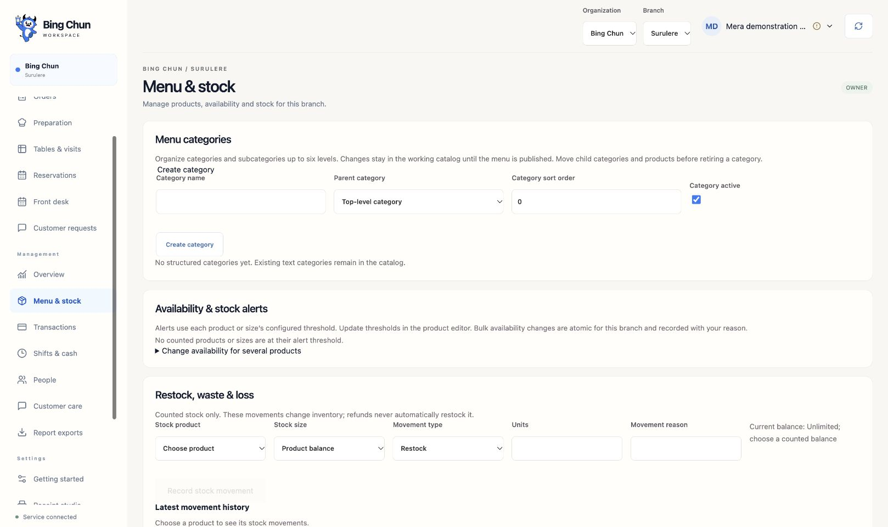

Both actual captures: CSS1618 × 960. Before is the existing Mera form stack; after reuses the verified Bing Chun brand, palette, typography and product photos. This is not an original Bing Chun administration screenshot.
Before: products below category, stock and shared-menu forms

After: searchable products, focused management views and reviewed publication